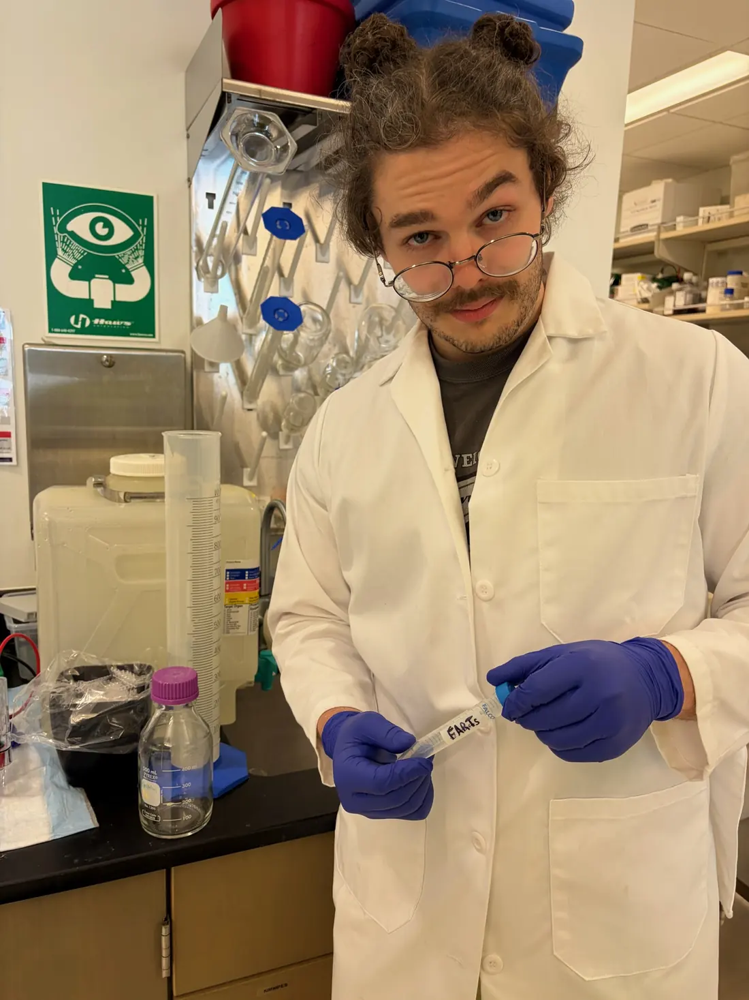

Human coaching · focused software · useful science
Strength coaching, training tools,
and practical exercise science.
Explore verified coaching and NAV Coach workflows. Unreleased education and experiments are not available publicly. Account-bound tester access is in development.
- Personal coaching
- Private training app
- Private testing access in development
What do you want from NAV?
I want better coaching software
See how NAV Coach works.
A private workspace for coach programming, athlete execution, trustworthy training history, and progress context—with the human coach still making the decisions.
Explore NAV CoachI want coaching
Get a plan built around you.
Strength, muscle, performance, and general fitness coaching with programming, feedback, progress review, communication, and education.
Explore coachingI'm interested in testing
Learn about planned private testing.
NAV is developing account-bound beta access. Unreleased materials are not available through this website.
Private testing statusHow training records should work
Record what you planned and what you did.
Prescription ≠ performance. If the plan says 3 × 5 at 225 lb but your last set has four reps, those are different records. NAV aims to preserve both without turning missing data into zero.
Quality before release
Education is being tested before publication.
NAV is developing learning and assessment materials, but unfinished courses are not public products and do not award credentials. Account-bound tester codes are in development and are not yet a verified public capability.
Our release standard
A working page is not automatically a finished course. Public release requires reviewed content, usable assessment, accessibility, accurate product descriptions and verified delivery.

Founder · Coach Nate
Meet the trainer and researcher behind NAV.
Nate Holochwost holds a B.S. in Kinesiology, a B.A. in Biology, and a Chemistry minor. Explore Nate’s real chemistry-lab and ACS conference photos, original research poster, peer-reviewed publication, and coaching CV.
Meet Coach Nate & view researchReady to start?